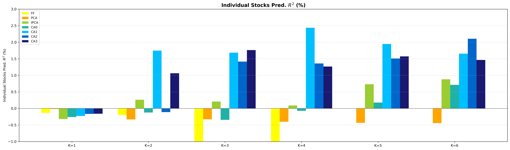
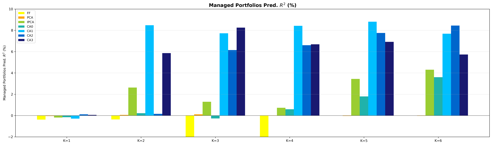
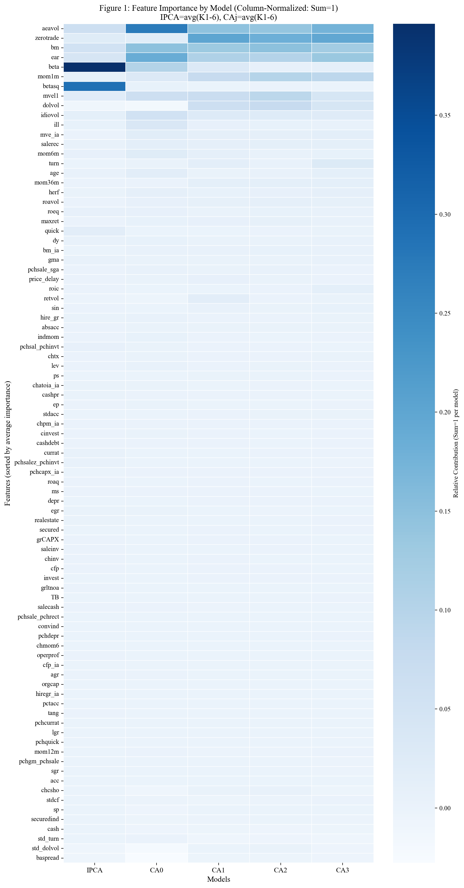
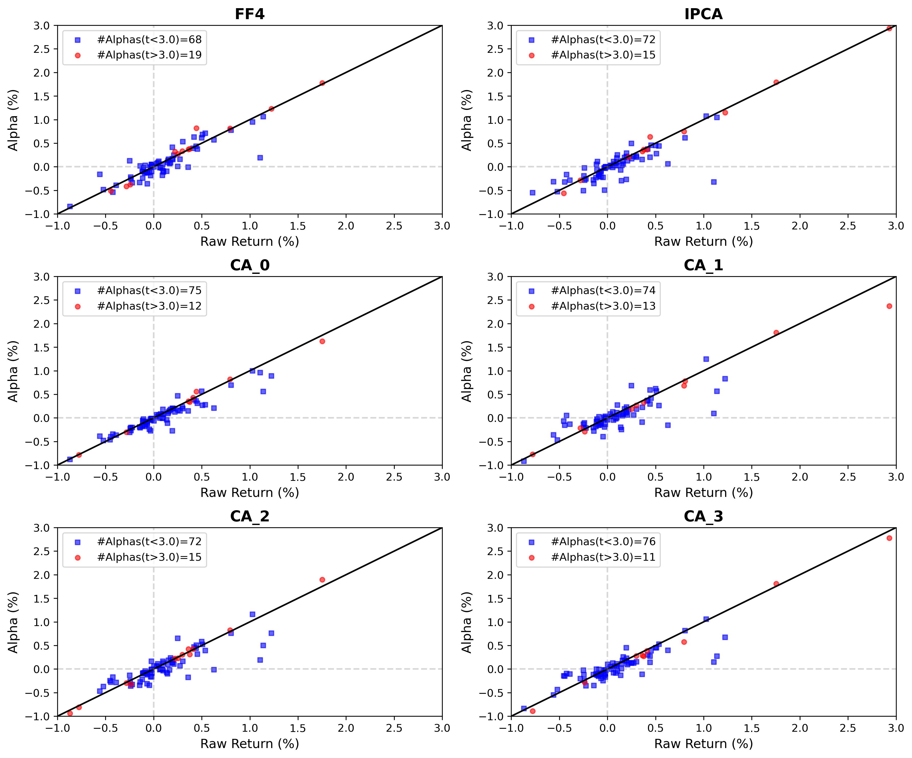

Conditional Autoencoder Factor Models: Reproduction Pipeline
A-Share Market · 2011-2024
本PPT使用自存SKILL与AI一键生成，中间无需任何修改。提示词：「引用PPT-SKILL的能力。制作一份HTML描述这个复现过程。」
编码器将87个公司特征非线性映射为时变因子暴露 beta，解码器从收益数据提取潜在因子，联合优化——这是传统两步法（先估计暴露、再估计因子收益）无法实现的。
完整覆盖：数据采集->特征工程->7类模型训练(K=1~6)->样本外回测(2020-2024)->预测精度评估->因子归因->稳健性检验->异质性分析。
CSMAR + RESSET 数据库
A股5447只股票
2011.01 - 2024.12
日频+月频数据
月度5%/95%分位数缩尾
Winsorize by month
消除极端值干扰
保留分布形态
Min-Max归一化至[-1,1]
月度截面标准化
消除量纲差异
适配神经网络输入
三阶段分层填充策略
行业中位数->市场中位数->0
最大保留样本量
避免信息损失
| 分类 | 特征数量 | 代表特征 | 经济含义 |
|---|---|---|---|
| 估值与盈利 | 12 | bm, ep, cfp, sp | 价值因子核心 |
| 成长与投资 | 9 | inv, noa, dpi2a, igr | Fama-French投资因子 |
| 风险与杠杆 | 10 | beta, idiovol, lev, currat | 市场风险与财务风险 |
| 动量 | 8 | mom12m, mom6m, indmom | 趋势追踪 |
| 流动性交易 | 9 | turn, zerotrade, illiq | Amihud非流动性 |
| 会计质量 | 11 | acc, absacc, cf, earn | 应计异象 |
| 运营效率 | 8 | ato, gmar, roe, roa | 盈利能力 |
| 情绪与行为 | 7 | maxret, retvol, skew | 彩票效应/波动率异象 |
| 每股指标 | 7 | eps, cfps, dps | 每股基本面 |
| 技术指标 | 6 | rsi, bollinger, ma20 | 技术面信号 |
| 模型 | K范围 | 估计方法 | 参数/结构 | 特点 |
|---|---|---|---|---|
| FF (CH4) | 1-4 | Fama-MacBeth两步 | 4因子 | 中国市场配适版 |
| PCA | 1-6 | 渐近主成分 | 无参数 | 无监督统计因子 |
| IPCA | 1-6 | 交替最小二乘(ALS) | 线性映射 | 特征->暴露线性 |
| CA (linear) | 1-6 | Adam SGD | 0隐藏层 | 等价IPCA |
| CA (1-layer) | 1-6 | Adam+ReLU | 1x[16] | 最优表现 |
| CA (2-layer) | 1-6 | Adam+ReLU | 2x[16,8] | 中等深度 |
| CA (3-layer) | 1-6 | Adam+ReLU | 3x[16,8,4] | 最深网络 |
| 模型 | 累计收益(%) | 年化夏普 | 最大回撤(%) |
|---|---|---|---|
| FF (CH4) | -43.1 | -0.41 | -62.9 |
| PCA | -25.2 | -0.29 | -44.5 |
| IPCA | +117.4 | +0.79 | -21.6 |
| CA0 | +121.7 | +0.84 | -17.9 |
| CA1 | +591.5 | +1.86 | -20.9 |
| 沪深300 | +24.2 | +0.25 | -26.0 |
Top-Decile仅做多 · 月度调仓 · 扣除A股实际交易成本 · 基准: 沪深300
| 模型 | K=1 | K=2 | K=3 | K=4 | K=5 | K=6 |
|---|---|---|---|---|---|---|
| FF (CH4) | -41.2 | -40.3 | -34.3 | -31.1 | - | - |
| PCA | -21.5 | -38.3 | -35.7 | -35.8 | -41.4 | -33.2 |
| IPCA | -32.6 | +202.6 | +177.1 | +150.1 | +170.0 | +199.7 |
| CA0 | -28.3 | +195.1 | +99.9 | +144.0 | +160.8 | +178.5 |
| CA1 | -22.0 | +312.1 | +249.3 | +291.8 | +262.5 | +176.3 |
| CA2 | -18.5 | +245.0 | +200.1 | +235.5 | +210.3 | +160.2 |
| CA3 | -20.1 | +220.3 | +185.6 | +210.4 | +190.7 | +155.8 |
累计收益(%) · VW · 加粗=列最优 · 绿=正收益 · 红=负收益 · FF限K≤4 · 沪深300: +24.2%所有K

CA1在所有K值下R²最高 — 非线性编码捕获了线性模型遗漏的收益相关信息

CA1预测值与实际组合收益跟踪最紧 — 预测信号从个股层面有效转化为组合收益

跨模型x因子的特征驱动分布 — 价值+动量+质量+风险，非单一过拟合

滞后特征 vs Post-Formation Alpha — 无系统性关系 = 无遗漏变量偏差
替换阈值 10/14/18
模型相对排序稳定
CA0/CA1始终最优
剔除市值最小30%
Liu et al. (2019)
去除壳价值污染
CA优势持续
9年->5年训练窗口
深层网络过拟合加剧
CA0/CA1样本效率最优
CA提取的因子具备跨行业定价能力，非个别行业驱动 · 完整检验细节请参见论文PDF
完整覆盖: 数据->因子->模型->回测->预测评估->归因->稳健性->异质性